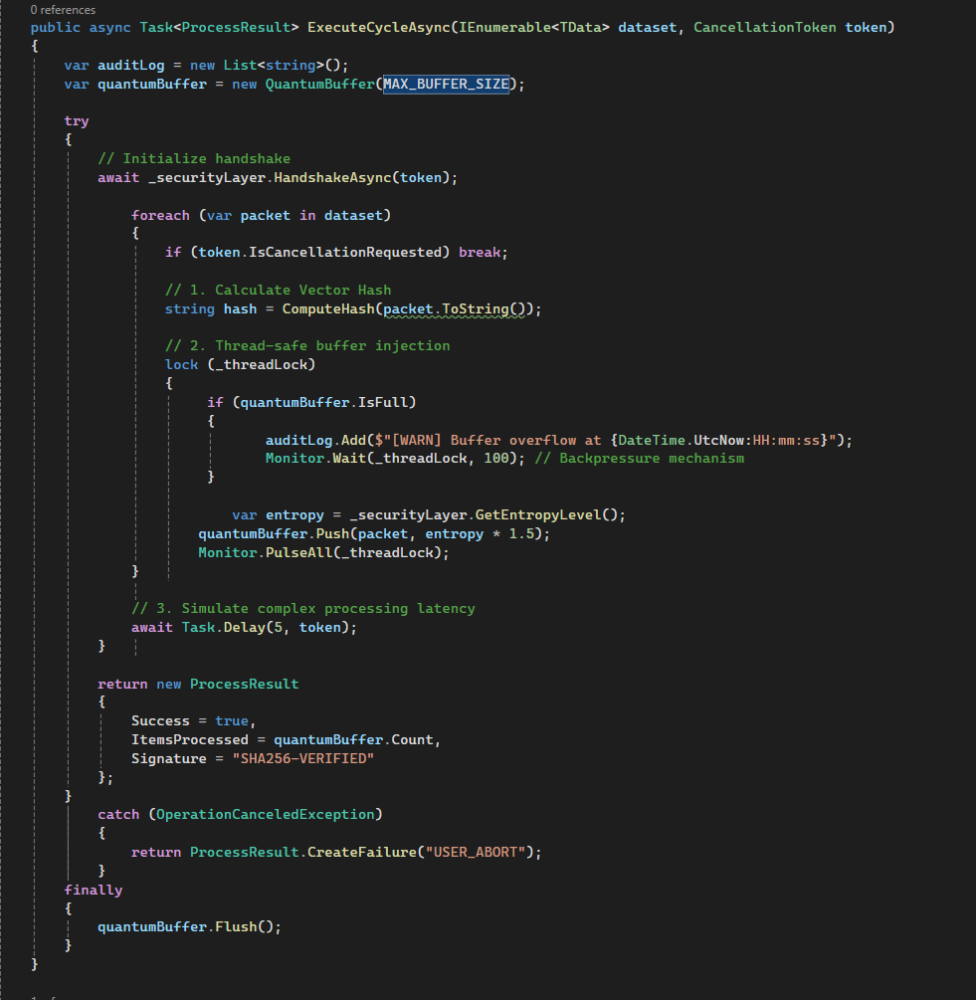

DELTA Střední škola informatiky a ekonomie
Programming, web development, and graphic design - 2024-presentWhat am I...
What am I...
What am I...
Beginnings and studies
I grew up in Pardubice, and even in high school at DELTA, I enjoyed technology and visual arts. I spent hours programming simple applications and experimenting with websites that I created for friends or school projects. At the same time, I got my first camera and learned to capture the world around me—from everyday life to nature, which fascinated me. School gave me the opportunity to combine technical skills with creativity, which motivated me greatly.
Travels and photographs
After school, I began combining my two passions—travel and photography. Every weekend, I head to the mountains, where I walk along trails and look for the perfect moments to capture. I photograph not only the beauty of the landscape, but also the atmosphere of the places and the feelings I bring back from my trips. These experiences inspired me to create my own blog and portfolio website, where I can combine visual art with interactive elements and my programming skills.
Programming and website development
In addition to photography, I also create websites and program. I enjoy creating modern and functional websites for small businesses, artists, or friends, combining aesthetics with technical precision. Thanks to my ability to notice details while also considering the overall user experience, I feel like a versatile creator. To this day, I combine my passion for outdoor activities with digital creation—whether it's a new website, an interactive gallery, or an app that documents my travels and photographs.
What I can do...

Languages
Czech
English
Education & Certificates
Photography workshop in Litomyšl
May 2025My Work...
In this section, you will find a selection of my photographs and projects that were created on my journey to success. Every shot or design means something to me. I'm trying to combine aesthetics with functionality and seek simple yet striking solutions.